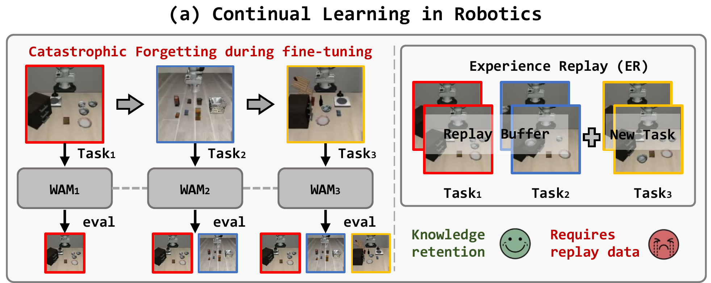
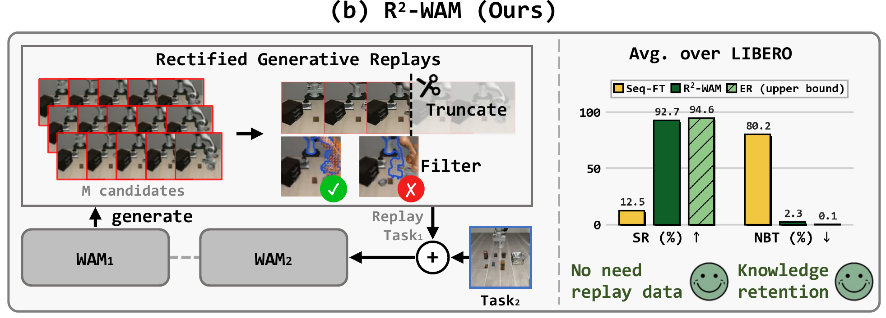
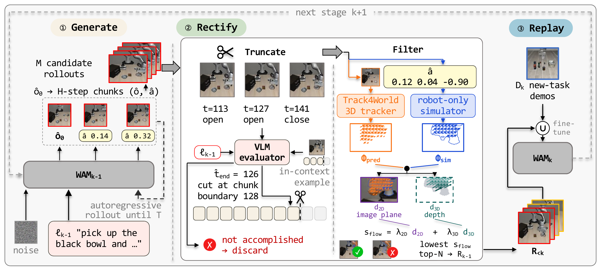
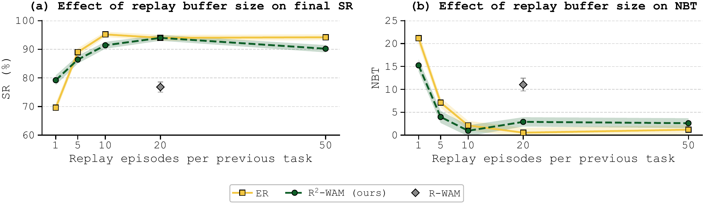
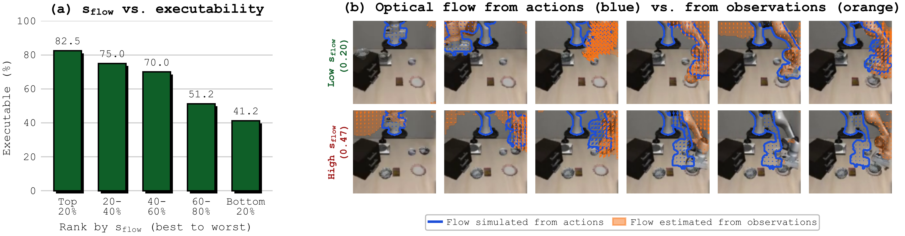
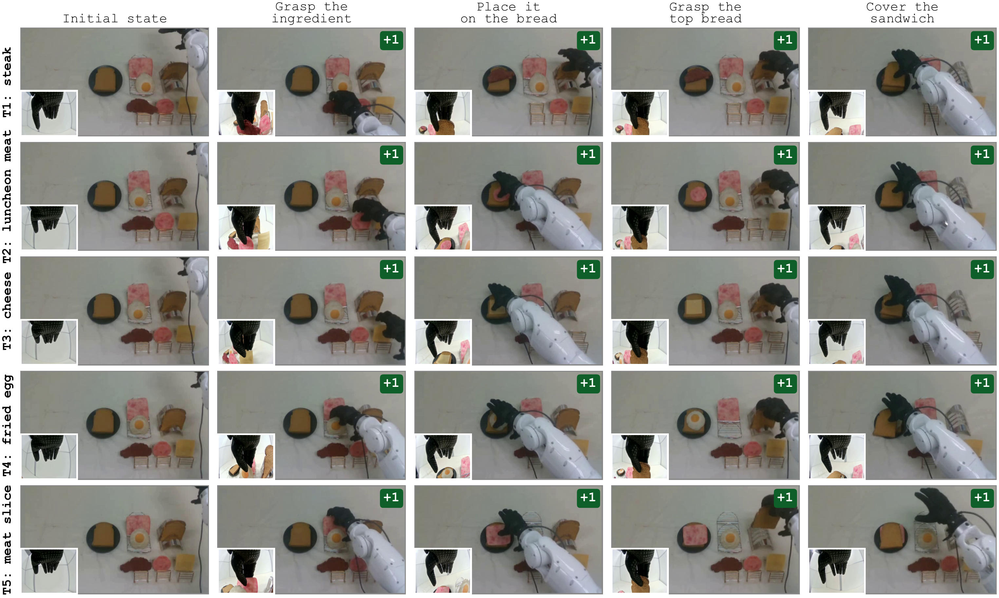
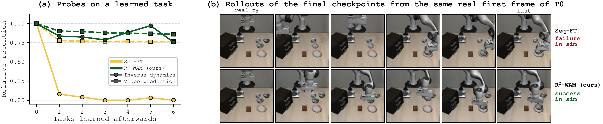

R²-WAM: a world action model that regenerates its own past so it does not have to forget it
1University of Electronic Science and Technology of China 2Shanghai AI Lab 3Fudan University
4Shanghai Jiao Tong University 5Tongji University 6Shanghai Innovation Institute


World action models (WAMs) built on pretrained video generation models adapt quickly to new robotic tasks, but they forget previously learned tasks under sequential fine-tuning. Experience replay (ER) mitigates such forgetting by rehearsing data of previous tasks, yet this data is often unavailable in robotics, where a policy is deployed as weights only and its training data is not shared along with it. In this work, we ask whether a WAM can achieve data-free continual learning by regenerating its own past.
Our key observation is that a WAM can indeed autoregressively regenerate complete rollouts of previously learned tasks and replay them to mitigate forgetting. However, replaying such raw rollouts still lags far behind replaying real data, which we attribute to two issues. First, the WAM is unable to recognize task completion and keeps generating purposeless motion after the task is done. Second, under open-loop generation, the generated actions gradually drift away from the generated observations.
To address both issues, we present rectified generative replay (R²-WAM), which truncates generated rollouts at task completion with an agentic evaluator and filters out rollouts whose actions are physically inconsistent with the observations. On the four LIBERO suites and five real-world tasks, R²-WAM reduces forgetting by over 90% relative to sequential fine-tuning and nearly matches ER without accessing any data from previous tasks. Our analysis further reveals that forgetting in WAMs concentrates in inverse dynamics modeling: a forgotten WAM still produces visually plausible observations of previous tasks while its generated actions fail.
Before learning task k, the current model WAMk−1 generates candidate rollouts of the task it has just learned. Two rectification steps turn them into usable replay data. Click a step to see what it does and why it is needed.

Given only the language instruction of task k−1, WAMk−1 first samples an initial observation from the instruction alone, then autoregressively generates M = 40 candidate rollouts as H-step chunks of observations and actions. Nothing from the original training data is used.
Raw rollouts already help: replaying them lifts the average LIBERO success rate from 12.5% (sequential fine-tuning) to 70.4%. But they are still far from real data, for the two reasons shown in the next steps.
Problem. The WAM has no notion of being done. After the object is placed it keeps generating motion: the gripper returns to the basket, re-grasps the bowl, or wanders. Replaying these tails teaches purposeless behaviour.
Fix. A VLM acts as an agentic evaluator: given the instruction, subsampled frames annotated with step index, gripper command and end-effector speed, and one human-annotated in-context example, it locates the step at which the task is completed, and the rollout is cut at the following chunk boundary. Rollouts judged as not accomplishing the task are discarded.
Removing truncation drops LIBERO-Spatial success from 94.0% to 70.8%.
Problem. Under open-loop generation the actions gradually drift away from the observations: the generated video shows one arm pose while the generated actions imply another.
Fix. The environment of a previous task is gone, but the robot itself is fully specified by its URDF and camera parameters. The generated actions are therefore executed in a robot-only simulator to obtain the optical flow they imply, while a dense 3D tracker (Track4World) estimates the flow actually visible in the generated frames. Their 2D and 3D discrepancy on the robot pixels gives the physical-consistency score sflow, and the N = 20 rollouts with the lowest score are kept.
Removing filtering drops LIBERO-Spatial success from 94.0% to 80.8%.
The kept rollouts Rk−1 join the replay set R<k, which is mixed with the demonstrations Dk of the new task (equal sampling weight) to fine-tune WAMk−1 into WAMk. The same procedure repeats at every stage, so the model never needs any real data of earlier tasks.
With 20 rectified rollouts per previous task, R²-WAM reaches 92.7% average success on LIBERO, 1.9 points below ER, which replays 20 real demonstrations per task.
These are the replay data. Each clip is regenerated by the WAM for a task it learned earlier, at the native 128×128 generation resolution and 10 fps (one frame per action step). Switch suites below.
Four raw generated rollouts with the truncation point marked on the timeline. In each case the task is completed, after which the WAM keeps going and reaches back down to re-grasp the bowl. The red-tinted frames are removed before replay.
Four LIBERO suites learned sequentially, three training seeds. All replay methods use 20 episodes per previous task. ER replays real demonstrations and serves as the upper bound; R-WAM replays raw generated rollouts without rectification.
| Method | LIBERO-Spatial | LIBERO-Object | LIBERO-Goal | LIBERO-10 | Average | ||||||
|---|---|---|---|---|---|---|---|---|---|---|---|
| SR ↑ | NBT ↓ | SR ↑ | NBT ↓ | SR ↑ | NBT ↓ | SR ↑ | NBT ↓ | SR ↑ | NBT ↓ | Plast. ↑ | |
| Seq-FT | 11.2 | 86.07 | 21.2 | 67.84 | 9.8 | 84.87 | 7.6 | 82.00 | 12.5 | 80.19 | 94.4 |
| Seq-LoRA | 9.6 | 75.42 | 17.6 | 52.47 | 9.8 | 68.72 | 7.4 | 71.24 | 11.1 | 66.96 | 84.4 |
| EWC | 12.0 | 85.59 | 23.6 | 62.19 | 10.0 | 84.55 | 7.8 | 82.24 | 13.3 | 78.64 | 95.0 |
| LwF | 13.0 | 85.14 | 27.6 | 61.76 | 10.4 | 83.70 | 8.6 | 78.96 | 14.9 | 77.39 | 94.2 |
| ER (real data) | 94.0±0.3 | 0.54±0.60 | 97.3±0.8 | −1.83±1.16 | 92.8±2.8 | 2.11±1.45 | 94.1±0.3 | −0.46±0.43 | 94.6±0.5 | 0.09±0.79 | 94.6±0.7 |
| R-WAM (raw replay) | 76.1±8.7 | 11.97±2.58 | 83.1±6.8 | 18.93±5.93 | 51.2±4.9 | 27.31±1.75 | 71.3±2.6 | 7.63±2.69 | 70.4±0.4 | 16.46±1.13 | 89.1±1.1 |
| R²-WAM (ours) | 94.0±1.1 | 2.90±0.32 | 95.5±0.4 | −0.31±1.05 | 92.2±2.3 | 2.00±3.17 | 88.9±4.2 | 4.73±2.28 | 92.7±1.2 | 2.33±1.08 | 94.7±0.4 |
SR: average success rate over all tasks after the last stage (per-suite Plasticity omitted here; see the paper). NBT: negative backward transfer (forgetting). Plast.: plasticity, the success on each task right after it is learned. Without replay, the WAM forgets almost everything (SR 11–15%) although it learns each new task well (Plasticity above 84%).
| Variant (LIBERO-Spatial) | SR ↑ | NBT ↓ | Plast. ↑ |
|---|---|---|---|
| R-WAM (no rectification) | 76.1 | 11.97 | 93.6 |
| R²-WAM w/o truncation | 70.8 | 13.73 | 89.2 |
| R²-WAM w/o filtering | 80.8 | 7.02 | 91.4 |
| R²-WAM (full) | 94.0 | 2.90 | 95.7 |
Both components are necessary. Without truncation, R²-WAM performs no better than R-WAM, which suggests that the purposeless motion at the end of a rollout interferes with the consistency score and makes filtering unreliable.


Five sandwich-making tasks learned one after another on a real arm with a dexterous hand: steak, luncheon meat, cheese, fried egg, meat slice. Each task has four stages and is scored by progress rate.

| Method | SR ↑ | NBT ↓ | Plast. ↑ |
|---|---|---|---|
| ER (real data) | 91.8 | 2.27 | 94.8 |
| Seq-FT | 28.5 | 65.62 | 98.8 |
| R²-WAM (ours) | 89.5 | 3.45 | 93.8 |
Metrics are computed on the progress rate over 20 trials per task. R²-WAM retains the earlier tasks within 2.3 points of ER without any real data of those tasks. Both replay methods give up 4–5 points of Plasticity relative to Seq-FT, which we attribute to interference among co-trained tasks that differ only in a visually similar target.
Every clip is the final R²-WAM checkpoint, after all five tasks were learned, at about 8× speed. Toggle between the head camera and the wrist camera.
Task 1 (steak) executed by the final checkpoint of each method, 8× speed. Sequential fine-tuning has forgotten it; R²-WAM retains it with no steak data at all.
Seq-FT executing task 1 (steak) at successive checkpoints, 6–9× speed. Progress falls from 4/4 right after the task is learned to 0/4 after four more tasks: the policy first stops going for the steak, then stops grasping anything at all.
A WAM couples two capabilities, inverse dynamics modeling and video prediction. We probe each separately with teacher forcing on LIBERO-Spatial as later tasks arrive, and ask which of them is lost.

This asymmetry explains why raw generated rollouts help at all, and why rectification is needed. Even a WAM whose actions have collapsed still imagines visually plausible observations, so it can regenerate the scene of a previous task; what is lost is the inverse dynamics that turns those observations into actions, and it is the same observation–action mapping that drifts inside long open-loop rollouts. Truncating the rollouts and keeping only the action-consistent ones is what makes the regenerated past a faithful substitute for the real one.
@article{fang2026r2wam,
title = {Data-Free Continual Learning for World Action Model with Rectified Generative Replay},
author = {Fang, Kaipeng and Liu, Hangxu and Shi, Chaojian and Zhou, Yunsong and Zhu, Hongzi and Guo, Minyi and Song, Jingkuan and Gao, Lianli},
year = {2026}
}